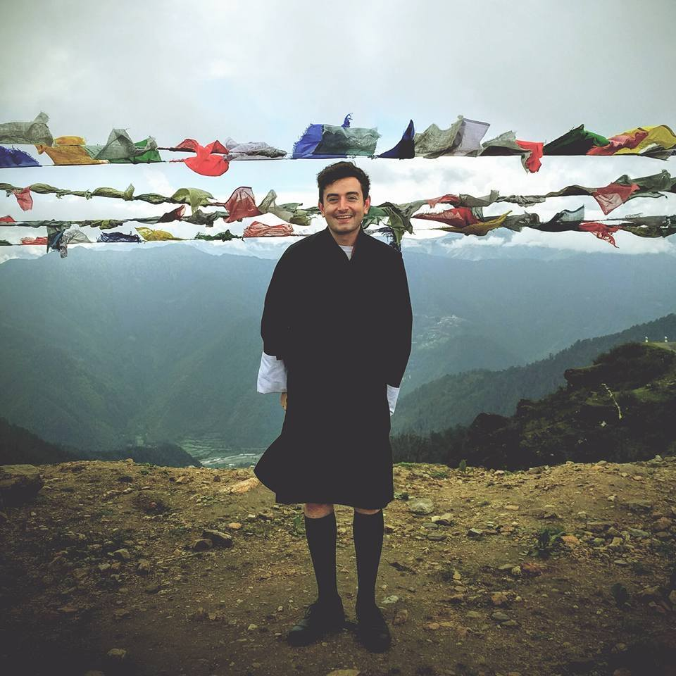
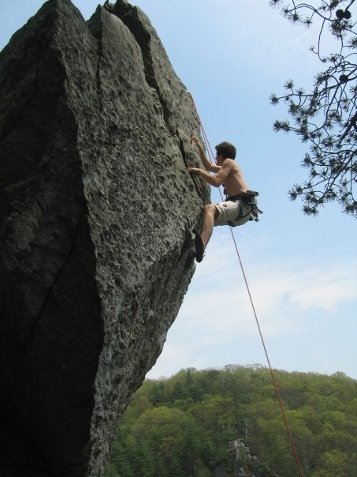

I was born in England in 1991, making me 25 years old now. When I was 11, my family and I moved to the DC/Baltimore area where I stayed until going to Penn State University in 2009, studying Hotel, Restaurant, and Institutional Management. After about 3.5 years I realized I wasn't having much fun, so I took two years off. During that time I worked in restaurants as a manager. I moved to Boulder, CO in 2014 and managed two restaurants on 16th and Pearl st., Aji Latin American Restaurant and Leaf Vegitarian Restaurant. In August of 2014 I joined Naropa University and decided to study Buddhist Psychology and Intercultural Communication. During my time at Naropa, I studied abroad in the small himalayan kingdom of Bhutan twice, which became a pivotal experience in my life. During that time I met my wife, Kencho who now lives with me in Longmont.
I have varied interests and hobbies. I have been a rock climber since I was 10, but these days I can only find time once or twice a week to get out.  I also mountain bike on trails around Boulder, Denver, Breckenridge, and Winter Park (I especially love downhilling in the summer here). I have played video games since I was really young, and therefore still do! I like all types of games, but especially those with rich stories, game mechanics, or multiplayer aspects. I also like to read, especially books by authors with whom I don't share a cultural background so that I can learn more about different perspectives. A recent favorite was The Vegitarian, by Han Kang. Right now I am reading A Little Life, by Hanya Yanagihara.
This is my beautiful, wonderful gif. I love him like a child. He has always been there for me, and I couldn't imagine where I would be in my life without him.